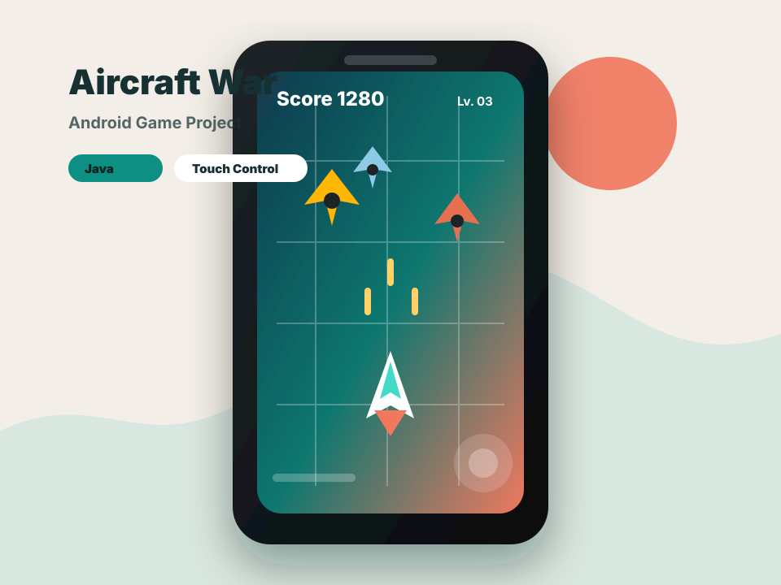
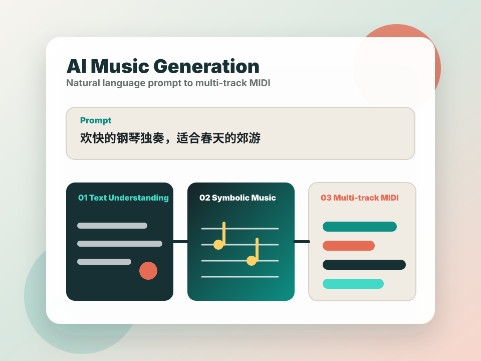
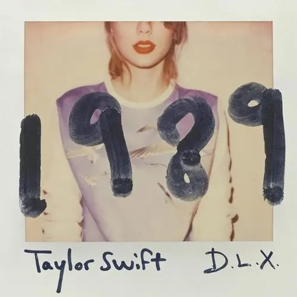
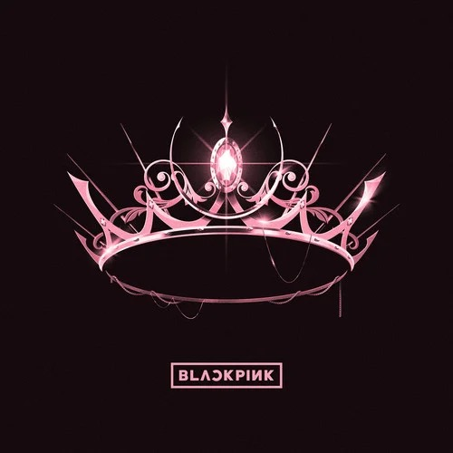
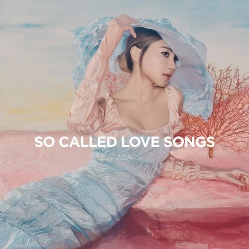

哈尔滨工业大学（深圳）
计算机科学与技术学院
Product Management · Computer Science · Shenzhen
哈尔滨工业大学（深圳）计算机科学与技术学院本科生，关注产品设计、数据分析与技术沟通。
Education
计算机科学与技术学院
省级三等奖
Skill Tree
能从数据脚本、算法逻辑到团队协作链路理解开发过程，减少产品与工程之间的翻译成本。
Project Showcase

Android Game · Java
面向移动端的经典射击游戏实现，围绕触控操作、敌机生成、碰撞检测与得分反馈搭建完整游戏循环。

AI Music Generation · Product Strategy
作为 4 人团队成员，参与从 0 到 1 设计并落地 AI 音乐生成系统，支持用户用自然语言描述场景与风格，自动生成对应 MIDI 音乐文件。
Product Sense
从用户场景、核心功能、交互体验与产品增长视角拆解 ChatGPT，沉淀 AI 助手类产品的体验观察与优化思路。
预留 App 拆解、AI 产品趋势观察、社交或电商赛道随笔。会陆续把 PRD、竞品表和功能优化建议等继续沉淀在这里。
联系交流The Human Me
QQ Music Playlist

Cruel Summer · Anti-hero · ME! · Opalite · Style · Lover · Red · Enchanted · …

Kill This Love · BOOMBAYAH · WHISTLE · Pink Venom · Forever Young · Hard to Love · STAY · You Never Know · …

孤雏 · 圆 · 小问题 · 3AM · Gas Station Diner · So Called Love Song · Tomorrow · Two at a time · …
地图从 Google Sheets CSV 同步。新增一行地点数据后，刷新网页即可更新足迹😊